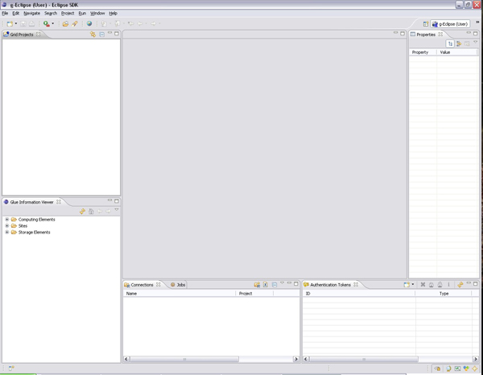

You can open the g-Eclipse User Perspective by choosing it from
Window > Open Perspective > Other > g-Eclipse (User). The Eclipse
Workbench will now look similar to the following:

At startup, the central part of the workbench, the editor, is empty. Depending on the action you start, you will get the corresponding editor in the Editor area.
Before you can start interacting with the Grid, you need to set up your g-Eclipse environment. The following configuration is necessary: